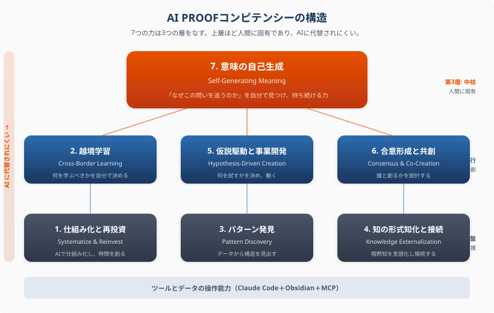

AI PROOFコンピテンシー — 2040年を生きる7つの力
「AI PROOF」とは何か
AIと共に働く環境の中で、AIには生成できない「意味」と「問い」を自ら創り出し、変化の中で価値を生み続ける力。
AIが知識検索・データ分析・文書生成を代替する2040年において、人間に固有の価値は「答えを出す力」ではなく、「問いを立て、意味を生成し、仮説を駆動し、他者と合意を形成し、予期しない発見から新しい行動を起こす力」にある。
| AI RESISTANT（AIに抵抗する） | AI PROOF（AIの中で揺るがない） |
|---|---|
| AIにできないことを探す | AIと共に働く中で人間の価値を発揮する |
| AIを避ける・制限する | AIを使いこなし、新しい仕事を発見する |
| 「AIに奪われない仕事」を選ぶ | 「AIがあるから初めてできる仕事」を創る |
| 防御的・消極的 | 生成的・積極的 |
7つのコンピテンシーの構造
7つの力は3つの層をなす。上層ほど人間に固有であり、AIに代替されにくい。

| 層 | コンピテンシー | AIとの関係 |
|---|---|---|
| 第3層: 中核 | 7. 意味の自己生成 | 人間に固有。AIは意味を生成しない |
| 第2層: 実行 | 2. 越境学習 / 5. 仮説駆動 / 6. 合意形成 | AIと人間の共創。AIがツール、人間が判断 |
| 第1層: 基盤 | 1. 仕組み化 / 3. パターン発見 / 4. 知の形式知化 | AIが大幅に支援。ただし「何を」の判断は人間 |
7つの力の詳細
1. 仕組み化と再投資 Systematize & Reinvest
ルーティンをAI・ツールで仕組み化し、生まれた時間を新しい価値の創造に再投資する力
| 発達段階 | 行動指標 |
|---|---|
| AEWレベル | 繰り返し作業を特定し、ツールで仕組み化できる。空いた時間を「もっと面白いこと」に使える |
| 文理融合レベル | ツールの進化に合わせて仕組み化の範囲を拡張し続け、初めて可能になる仕事を発見できる |
なぜAI PROOFか: AIは仕組み化を実行するが、「何を仕組み化すべきか」「空いた時間で何を創るか」を判断するのは人間。
2. 越境学習 Cross-Border Learning
分野の境界を越えて、必要な瞬間に必要なことをJust in Timeで学ぶ力
| 発達段階 | 行動指標 |
|---|---|
| AEWレベル | 「今この問題を解くために必要なスキル」を、資格や研修を待たずに独学で獲得できる |
| 文理融合レベル | 一本の問いに導かれて文理の境界を自然に越え、異なる分野の知識を統合できる |
なぜAI PROOFか: AIは「聞かれたこと」に答えるが、「何を学ぶべきか」を自分で決めるのは人間。問いが越境学習を駆動し、越境学習が新しい問いを生む。
3. パターン発見 Pattern Discovery
データから予期しない発見をし、異なる領域の間に構造的同型性を見出す力
| 発達段階 | 行動指標 |
|---|---|
| AEWレベル | 自分の仕事のデータから、想定していなかった顧客・ニーズ・パターンを発見できる |
| 文理融合レベル | 異なる分野の間に構造的同型性を発見し、一方の知恵を他方に翻訳できる |
なぜAI PROOFか: AIはパターンを抽出するが、「それが何を意味するか」を解釈し行動に変換するのは人間。異分野間の同型性は、人間が問わなければAIは探索しない。
4. 知の形式知化と接続 Knowledge Externalization & Connection
暗黙知を言語化・構造化してツールに蓄積し、知恵同士を接続してネットワーク化する力
| 発達段階 | 行動指標 |
|---|---|
| AEWレベル | 仕事の勘所・判断基準・成功パターンを、他者に共有可能な形で記録できる |
| 文理融合レベル | 実践パターンを「型」として言語化し、型同士のもつれから新しい方法論を生成できる |
なぜAI PROOFか: AIはテキストを生成するが、「何を記録すべきか」を判断するのは人間。知恵のネットワークを育てる行為は、人間の意味生成そのもの。
5. 仮説駆動と事業開発 Hypothesis-Driven Creation
正解を知らない状態から仮説を立てて動き、データで検証し、発見に基づいて次の一手を打つ力
| 発達段階 | 行動指標 |
|---|---|
| AEWレベル | 計画が完璧でなくても「まず始める」ことができる。やりながらデータを見て軌道修正できる |
| 文理融合レベル | 崩壊や想定外の事態を「カオスの力」として使い、新しいパラダイムを生成できる |
なぜAI PROOFか: AIは指示されたタスクを実行するが、「何を試すべきか」という仮説の起点を設定するのは人間。失敗から意味を見出す力はAIには原理的に困難。
6. 合意形成と共創 Consensus & Co-Creation
多様な立場の人々の意見を統合し、全員が参画する合意を形成しながら、新しい価値を共創する力
| 発達段階 | 行動指標 |
|---|---|
| AEWレベル | 自分の意見を言語化して伝えられる。他者の意見を聞き、統合案を考えられる |
| 文理融合レベル | 不在の声（将来世代、少数者）を想像し代弁できる。対立を「もつれ」として活かし、止揚できる |
なぜAI PROOFか: AIは意見を統合するツールになるが、「この場で何を問うべきか」「誰の声が聞こえていないか」を判断するのは人間。
7. 意味の自己生成 Self-Generating Meaning
外部から与えられた目的ではなく、自分自身で「なぜこの仕事をするのか」「なぜこの問いを追うのか」という意味を生成し続ける力
| 発達段階 | 行動指標 |
|---|---|
| AEWレベル | 与えられた仕事の中に、自分なりの意味や改善の余地を見出せる。「言われたことをやる」だけで終わらない |
| 文理融合レベル | 長年にわたる一本の問いを持ち、その問いが自分のすべての活動に意味を与えている |
これが7つのコンピテンシーの中核であり、最もAI PROOFな能力。AIは「意味」を生成しない。AIは確率的に妥当なテキストを出力するが、「なぜこれが大切か」「なぜこの問いを追い続けるのか」という実存的な意味の生成は、生きている人間にしかできない。
NEXTハイスクールの3本柱との接続
| NEXTハイスクールの柱 | 対応するコンピテンシー | AI PROOFの本質 |
|---|---|---|
| 柱1: AIに代替されない能力 | 7. 意味の自己生成 + 2. 越境学習 + 5. 仮説駆動 | AIは意味を生成しない。問いを立て、仮説を駆動し、越境的に学ぶサイクルは人間に固有 |
| 柱2: 経済社会を支える人材 | 1. 仕組み化 + 3. パターン発見 + 4. 知の形式知化 | データを直接扱い、仮説検証を回し、知恵を蓄積するアドバンスド・エッセンシャルワーカー |
| 柱3: 教育機会の確保 | 6. 合意形成と共創 + 2. 越境学習 | 地理的制約を越えて学び、多様な立場の人と共創する力 |
2つの人材類型は同じ発達軌跡の上にある
7つのコンピテンシーには、それぞれ2段階の発達がある。
| コンピテンシー | AEWレベル（現場で発揮） | 文理融合レベル（分野を越えて発揮） |
|---|---|---|
| 1. 仕組み化 | ルーティンを仕組み化し、空いた時間で価値を創る | ツールの進化で仕組み化を拡張し、新しい仕事を発見する |
| 2. 越境学習 | 必要な瞬間に独学で新しいスキルを獲得する | 一本の問いで分野の境界を自然に越え、知識を統合する |
| 3. パターン発見 | データから予期しない発見をする | 異分野間の構造的同型性を発見し、知恵を翻訳する |
| 4. 知の形式知化 | 暗黙知を体系化し、他者と共有できる | 実践パターンをメタモジュールとして言語化する |
| 5. 仮説駆動 | 正解なしで始め、データで検証し、軌道修正する | 崩壊をカオスの力に変え、新しいパラダイムを生成する |
| 6. 合意形成 | 自分の意見を伝え、他者の意見を統合できる | 不在の声を代弁し、対立を止揚して共創する |
| 7. 意味の自己生成 | 与えられた仕事の中に意味を見出す | すべての活動に意味を与え続ける問いを持つ |
アドバンスド・エッセンシャルワーカー（AEWレベル）と文理融合型プロジェクト推進者（文理融合レベル）は、同じ発達軌跡の上にある。プラネタリー・ラーニングは、この発達の最初の段階を高校3年間で体験させ、AI PROOFな人材を育てる教育モデル。